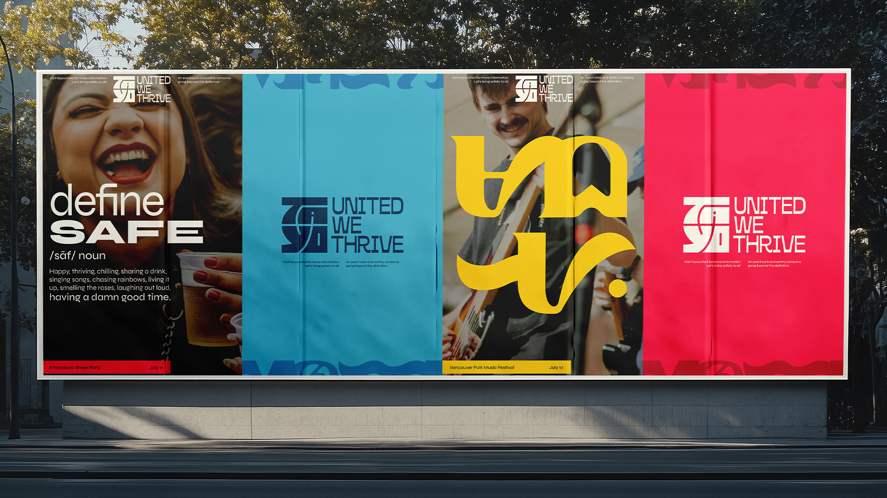
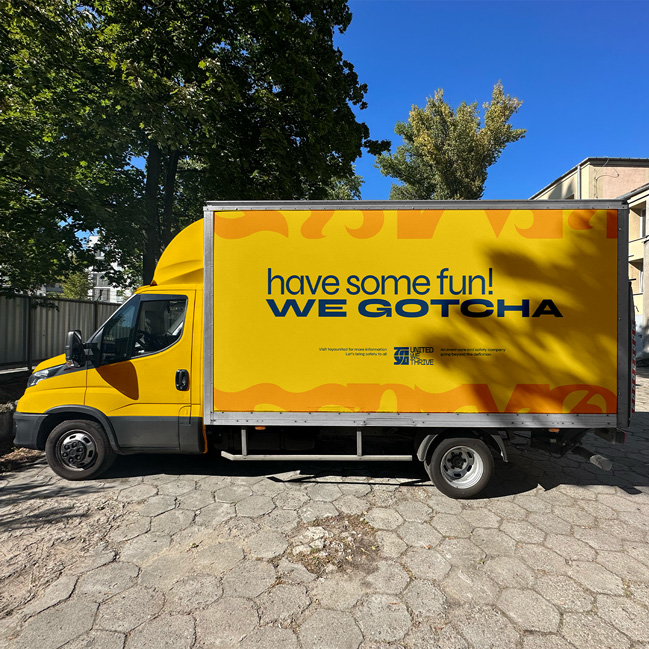
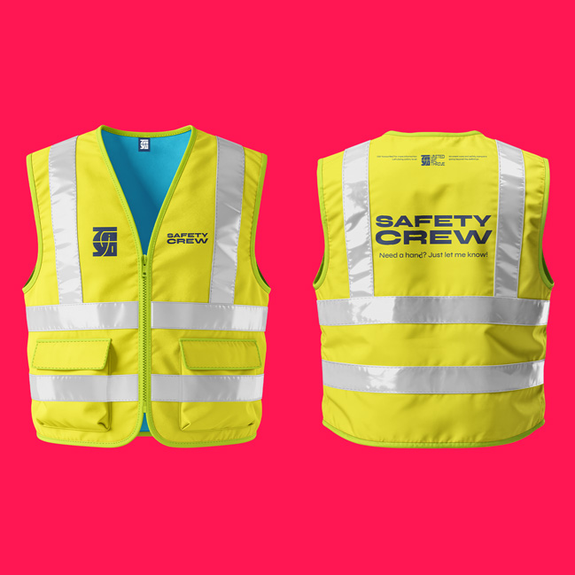
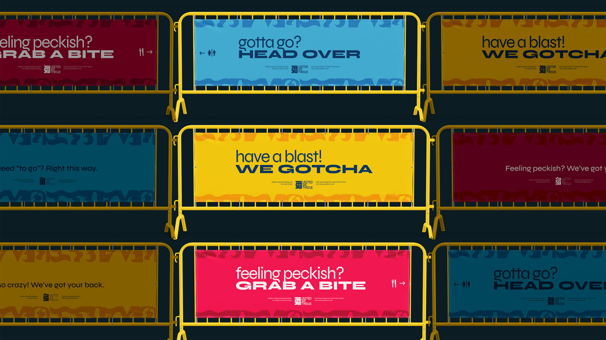
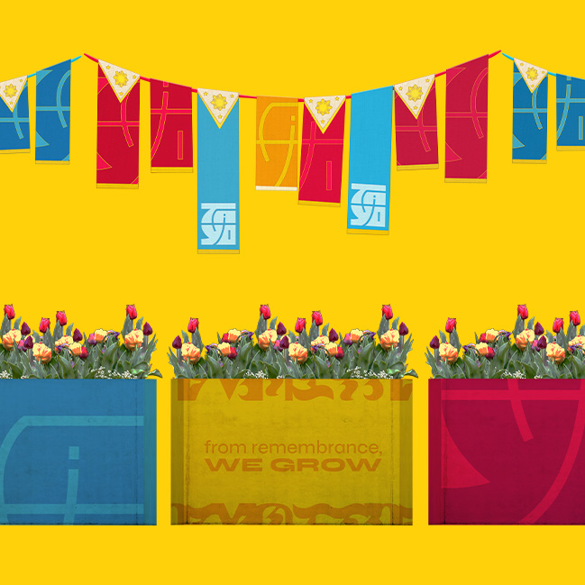
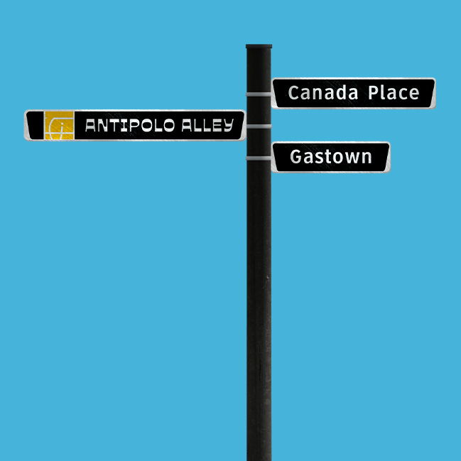
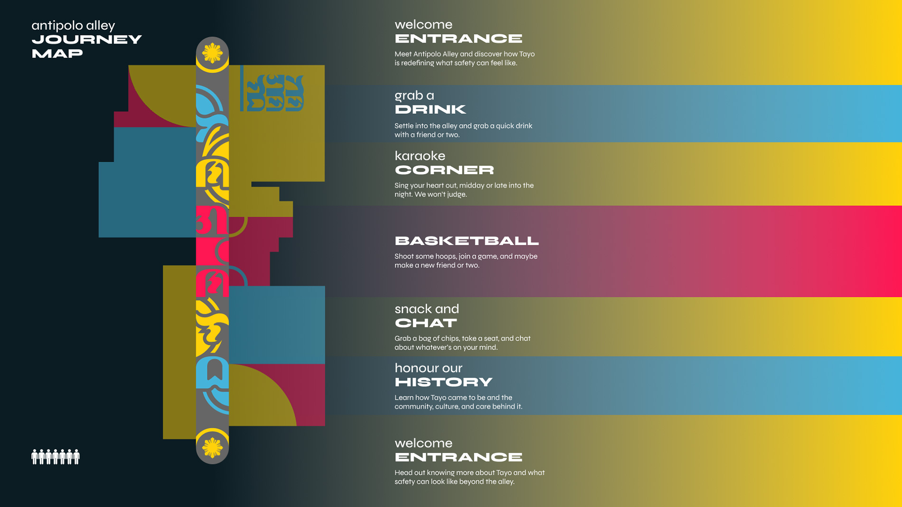
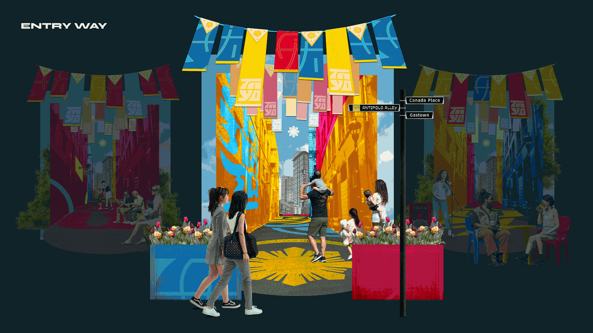

Founded in response to the 2025 Lapu Lapu Festival attack, Tayo is
an event care and safety company redefining what it means to feel
safe. Rooted in Filipino culture, Tayo brings trust, care, and
community together to create spaces where people can celebrate
freely, knowing they're looked after both physically and
emotionally.
The Antipolo Alley portion of this project was developed under the
kind mentorship of Alice Rooney at HCMA Architecture & Design.
The name “Tayo” was chosen for the two meanings it holds. Depending on
its pronunciation, “tayo” can mean either “us” or “to stand,”
capturing the spirit of rising together and lifting one another up as
a community.
Inspired by Baybayin, a traditional Filipino writing system, the
logo's curves echo the shapes of its characters, bringing a little
piece of Filipino heritage into Tayo's identity.



To bring TAYO’s approach to event safety to life, the brand extends to
practical applications, including a transport truck that doubles as a
safety barrier and high-visibility vests that help attendees identify
staff. Each application balances functionality with visibility,
helping TAYO stand out in a crowd.



Reflecting the bustling streets of the Philippines, Antipolo Alley
welcomes visitors through an inviting entryway, complete with all-day
karaoke and a classic basketball hoop at the centre of the lane.
By bringing a sense of home and familiarity to the Filipino community,
Antipolo Alley serves as a symbol of safety and celebration, honouring
those who have passed while nurturing the lives that continue to
thrive.


TAYO began as a personal outlet for processing my grief following the
tragic Lapu Lapu Day Festival attack. Since then, it has grown into a
celebration of Filipino culture, redefining safety through care,
solidarity, and community.
My hope is that those affected by the tragedy can reclaim their sense
of safety and the freedom that comes with it. At its heart, TAYO
remains rooted in remembrance, honouring the lives lost and the
community affected.
𖡼𖤣𖥧𖡼𓋼𖤣𖥧𓋼𓍊 FUN FACT: A FILIPINO PERSON'S FAVOURITE PASS TIME IS POINTING OUT OTHER FILIPINOS𖡼.𖤣𖥧𖡼.𖤣𖥧
With every project I scrounge up and every tale I weave, there’s one
thing at the heart of it all: creating for the everyday person and the
communities they call home.